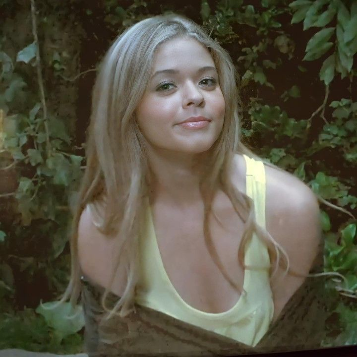
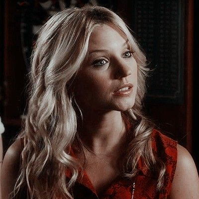

Quién es quién
Rosewood es de esas ciudades que parecen sacadas de un cuento: casas perfectas, jardines impecables y una comunidad que, al menos a simple vista, parece ideal. Pero no nos engañemos. Por debajo de esa fachada, se tejen secretos, mentiras y traiciones que envuelven a cada uno de sus habitantes.En el corazón de este entramado, están cuatro amigas: Aria, Spencer, Hanna y Emily, unidas por su amistad, pero también por los oscuros misterios que rodean la desaparición de Alison DiLaurentis.
Estas chicas se enfrentan a un enemigo anónimo que las manipula y las persigue, pero no están solas.
Rosewood está repleta de personajes secundarios, cada uno con su propio drama y conexión con el misterio central.
Alison DiLaurentis
Alison era esa amiga que todos querían tener, pero también temían. Carismática, manipuladora y conocedora de los secretos de todos. Su desaparición marcó el inicio de una pesadilla: 'A'. Con el tiempo, su figura pasó de víctima a una pieza clave del rompecabezas.
Ezra Fitz

Ezra, el profesor que nunca debió enamorarse de una alumna. Su relación con Aria fue polémica, pero su obsesión por escribir un libro sobre Alison y sus vínculos ocultos lo convirtieron en una figura ambigua.
Mona Vanderwaal

Mona pasó de ser ignorada y acosada por Alison a convertirse en la primera 'A'. Inteligente y manipuladora, su habilidad para mover los hilos fue impresionante. Aunque comenzó como una amenaza, se convirtió en una pieza clave.
Toby Cavanaugh
El chico misterioso que no terminamos de entender del todo. Toby, con su pasado difícil y su conexión con Jenna, se mueve entre la sombra y la luz. Su relación con Spencer, lo redime a los ojos de muchos, pero su rol en el juego de "A" complica las cosas. Es uno de los personajes que siempre parece saber más de lo que dice.
Caleb Rivers
Con un pasado complicado y una habilidad impresionante para hackear, Caleb se convierte en un aliado invaluable para las chicas. Su amor por Hanna es incondicional, y su lealtad lo convierte en un personaje fundamental en los momentos más oscuros.
Jenna Marshall

La presencia de Jenna siempre es inquietante. Desde aquel "accidente" que la dejó ciega, su relación con las chicas es tensa. Jenna todo el tiempo es misteriosa, calculadora y siempre parece estar un paso adelante, dejando a todos con la sensación de que sabe más de lo que aparenta.
Cece Drake
Charlotte es una de las villanas más complejas. Nació como Charles, pero fue rechazada por su familia, lo que marcó su vida para siempre. Su historia está llena de dolor y tragedia, y aunque sus acciones como "A" son crueles, también reflejan su lucha por pertenecer y encontrar su lugar en un mundo que siempre le dió la espalda.
Melissa Hastings

Melisa es la hermana mayor que siempre parece tener algo que ocultar. Su relación con Spencer es tensa, Llena de celos y competencia, pero a la vez hay un extraño sentido de protección. Melisa está involucrada en varios de los secretos de Rosewood y su papel en la historia siempre ha dejado dudas sobre sus verdaderas intenciones.
Paige McCullers

Paige es el interés amoroso más conflictivo de Emily. Su inseguridad la convierte en un personaje con matices que lucha entre sus sentimientos y su forma de manejarlos. Aunque a veces resulta problemática, Paige también demuestra ser valiente y leal cuando las cosas se ponen complicadas.